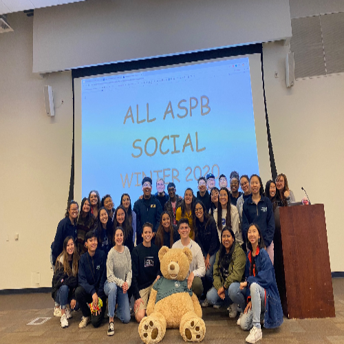
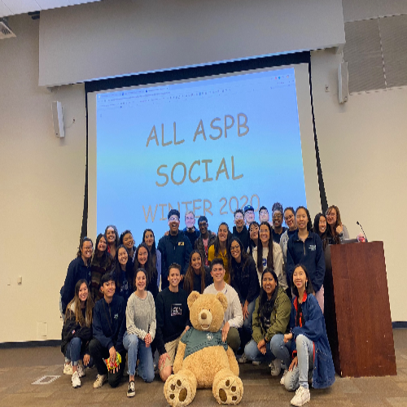

Nicole Corona
I am an aspiring entrepreneur who enjoys connecting the dots: be it ideas derived from different disciplines, people from different teams, or applications from different intellectual ideas. I have strong leadership skills and an academic background in entrepreneurial development, management, and innovation learning.
I have always had an entrepreneurial spirit which was emboldened by my immigrant parents and their small start up business. Growing up in a small family business has created an interest in the field of business. I would usually spend entire days absorbing and learning from things that were around me. As a little girl, I would initially accompany my parents to the bakery as a wide-eyed kindergartner. At the time the business was more of a playground with smells of baked treats filling the air. Ultimately I started to become aware of the responsibilities within the shop that I could assist in completing. Seven years ago I transitioned into a “real” employee. Roughly twenty-six hours a week I am at the bakery working side by side with my industrious parents. I was being tasked with providing customer assistance and running the register. I had spent most of my life in this place but now I was nervous. Looking back on my first day, my hands trembled as I ran the register keys and handed back what I knew was the correct change but still doubted I had counted correctly. Taking simple orders that I had seen my parents take a hundred times now seemed monumental and beyond my ability. I was still doing things the same way but I had and now took pride in the service I was providing all in an effort to help my parents. As I settled in I started to wonder if there were other ways I could contribute to the family business. I discovered I could do what, because of my parents’ schedule, they could not. While I had gained confidence working in the comfortable walls of the bakery, I knew that I would have to go beyond those walls to grow the business and test myself.
In my undergraduate studies, I’ve taken on various leadership roles, including mentoring under the Chicano Link Peer Mentor Program, coordinating student life events for hundreds of undergraduate students at UCR through the Associate Student Board Program, and volunteering to teach with the Youth Ministry in Saint Louis of France Catholic Church. I’ve also been an Ambassador for the NHSS conferences.
Being an entrepreneur to me, is someone who doesn’t only fix problems, but finds solutions. It is not all about starting a business and taking on all the financial risks. It is about being able to have a mindset of being capable of spreading the knowledge to create new opportunities, share ideas and learn and grow experiences and failures that occur throughout the way. An entrepreneur can also go from a person simply thinking outside of the box, and expecting the unexpected. As an entrepreneur I know I can affect change both in my community and beyond.Ultimately, an investment in me is an investment in the future.
I’m graduating in May 2023 and I’m interested in full-time leadership roles. Please feel free to get in touch with me.
Experience
Membership Division
• Coordinated and executed quarterly ASPB meetings and volunteer appreciation weeks
• Fostered outreach opportunities to the UCR community through implementing the Quarter for a Cause initiative each quarter
• Provided wide workshops and trainings
• Experience with GroupMe, Skype, Slack
Ambassador
• Responsible for hosting world wide meetings
• Encourage creativity and leadership skills by collaborating with other students and NSHSS members
• Organize annual Nobel Day celebration
Stage Production and Business Manager
• Communicate with actors and production team
• Plan out weekly schedules
• Help Stage Manager with setup and breakdown of scenic/props/ costumes during rehearsals
• During performances, "call cues" and run the show from backstage area
Education
UC Riverside
Portfolio



